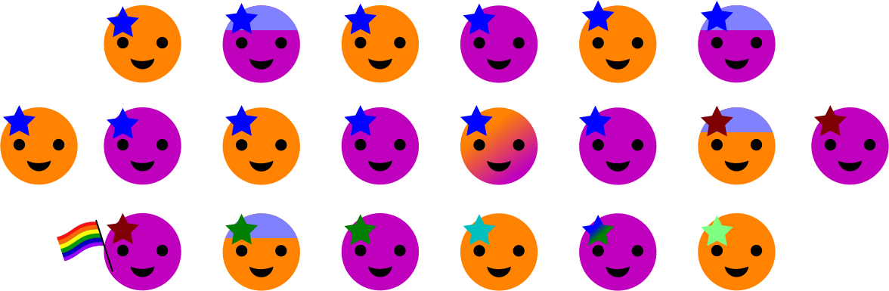
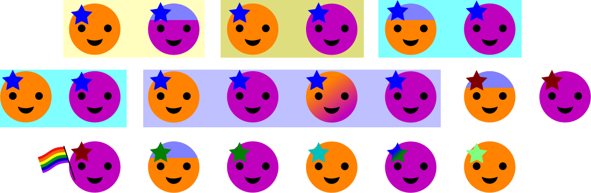

Diversity Works
Tech Companies have a notorious diversity problem.
This may look familiar.
Why should we care?
We make products for everyone.
20 Smilies

Representing the US adult population
51% Female, 49% Male, 0.3% Trans/Non-Binary

Census Bureaus March 2015 Current Population Survey / June–September 2012 Gallup poll
63.7% White

16.3% Hispanic or Latino
12.2% Black

4.7% Asian

1.9% Two or more races
0.9% Native American/Alaskan/Hawaiian/PI

3.4% Identify as LGB

19% Report Having a Disability
Nearly 1 in 5 People Have a Disability in the U.S., Census Bureau Reports, July 2012
10% age 19 to 25
Population Distribution by Age, Kaiser Family Foundation, 2014
12% age 26 to 34

Population Distribution by Age, Kaiser Family Foundation, 2014
13% age 35 to 44

Population Distribution by Age, Kaiser Family Foundation, 2014
14% age 45 to 54
Population Distribution by Age, Kaiser Family Foundation, 2014
14% age 55 to 64
Population Distribution by Age, Kaiser Family Foundation, 2014
15% age 65+

Population Distribution by Age, Kaiser Family Foundation, 2014
Our Consumers
A conservative estimate
Research proves diversity makes companies better.
Diversity is crucial to encouraging different perspectives and ideas that foster innovation.
"Global Diversity and Inclusion: Fostering Innovation Through a Diverse Workforce."
Forbes | Insights, July 2011
When selecting a problem-solving team from a diverse population of intelligent agents, a team of randomly selected agents outperforms a team comprised of the best-performing agents.
Lu Hong and Scott E. Page "Groups of diverse problem solvers can outperform groups of high-ability problem solvers."
Michigan Business School and Complex Systems, University of Michigan; and Department of Finance, Loyola University, September 2004
We’ve found that when at least one member of a team has traits in common with the end user, the entire team better understands that user.
Sylvia Ann HewlettMelinda MarshallLaura Sherbin "How Diversity Can Drive Innovation"
Harvard Business Review, December 2013
We’ve found that when at least one member of a team has traits in common with the end user, the entire team better understands that user.
Sylvia Ann HewlettMelinda MarshallLaura Sherbin "How Diversity Can Drive Innovation"
Harvard Business Review, December 2013
Companies with diverse executive boards enjoy significantly higher earnings and returns on equity.
Thomas Barta, Markus Kleiner, and Tilo Neumann "Is there a payoff from top-team diversity?"
McKinsey Quarterly, April 2012
How does this happen?
The Myth of Meritocracy.
Myth:
The most qualified candidate gets the job.
Truth:
Some qualified people never make it into consideration because of unconscious bias.
Personal Stories
Carlos Zuniga

- Talented programmer
- Mad Sysadmin skills
- Great at Sales Meetings
- Editor for Mexican Spanish on the WordPress Polyglots team
- Fun to work with
Carlos Zuniga
After applying to positions I felt I was qualified for and receiving no responses, I reapplied a couple weeks later as 'Carl' instead of 'Carlos'.
Almost all of them called back asking for 'Carl.'
What's in a name?
Racial Bias in Hiring
A November 2002 study by the University of Chicago Graduate School of Business
Applicants with "white-sounding" names were 50 percent more likely to get called for an interview than applicants with "African-American-sounding" names.
The most surprising and disheartening result is seeing that applicants with African-American names were not rewarded for having better resumes.
Marianne Bertrand "Racial Bias in Hiring."
University of Chicago Graduate School of Business, November 2002
Kim O'Grady

I made one change that day. I put Mr in front of my name on my CV. ...I got an interview for the very next job I applied for. And the one after that.
Kim O'Grady "How I Discovered Gender Discrimination."
Tumblr, July 2013
Science faculty’s subtle gender biases favor male students
A November 2012 study by Yale University
Faculty participants rated the male applicant as significantly more competent and hire-able than the (identical) female applicant.
Corinne A. Moss-Racusin, John F. Dovidio, Victoria L. Brescoll, Mark J. Graham, and Jo Handelsman "Science faculty’s subtle gender biases favor male students."
Yale University, November 2012
Courtney Wilburn

- White House LGBTQ Tech & Innovation Fellow
- PHP and nodejs programmer
- Public Speaker and Teacher
Courtney Wilburn
"Culture Fit"
Melanie Chongolola

- Super Organized
- Mad Quickbooks Skills
- Great managing Clients
- Excellent Writer
- Also fun to work with
Melanie Chongolola
The day of my interview, I arrived and the manager took me into his office.
The first thing he said was, ‘After speaking to you on the phone to schedule the interview, I expected somebody white!’.
Illegal Interview Questions
How old are you?
What is your race, color or ethnicity?
Do you have children or plan to?
What is your religious affiliation?
Are you disabled?
Let's make it better!
Listen.
Think.
Realize diversity is an asset.
Marc Coleman
Founder and president of The Tactile Group, LLC.

When we have to choose among equally qualified candidates, we choose the candidate that will best maintain our culture of diversity.
Right now, we could use the perspective of some cisgender straight white men.
Explore new networks.

Examine your job listings.
Be part of the solution.
Support organizations working to fix the problem.
National organizations